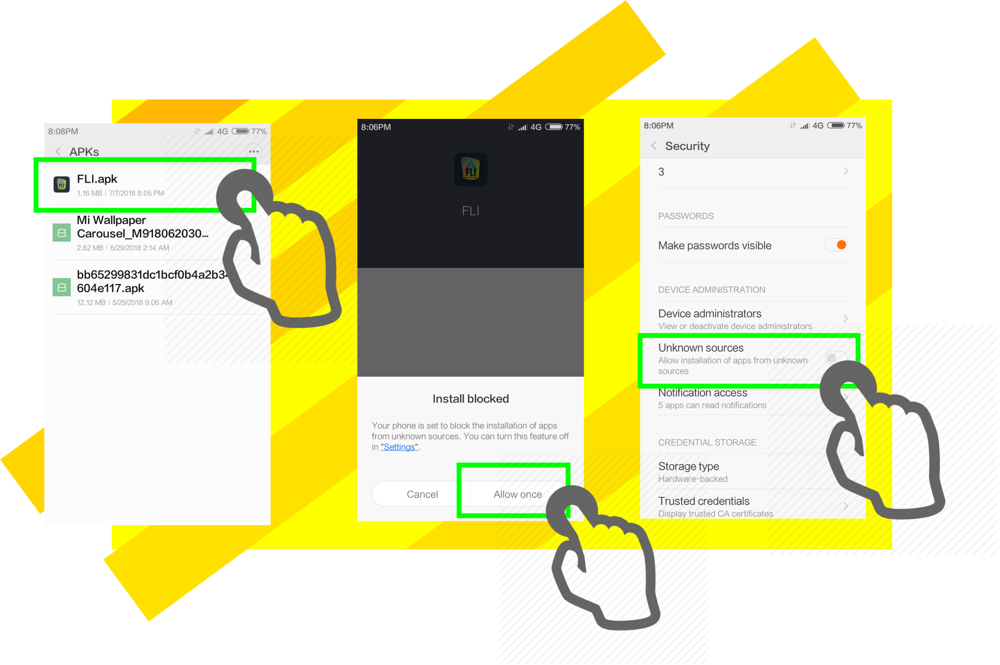
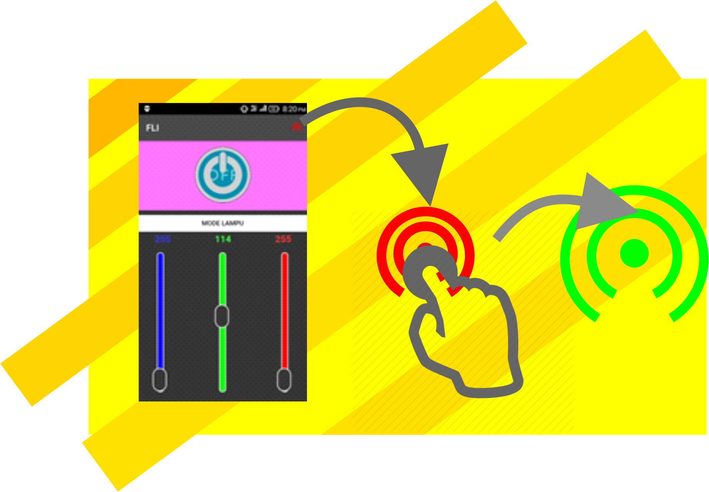
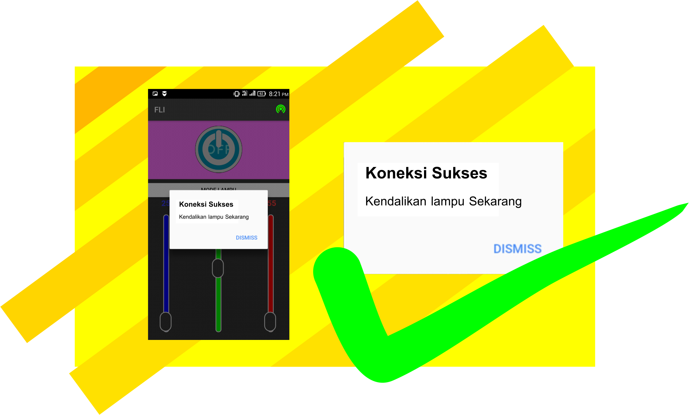
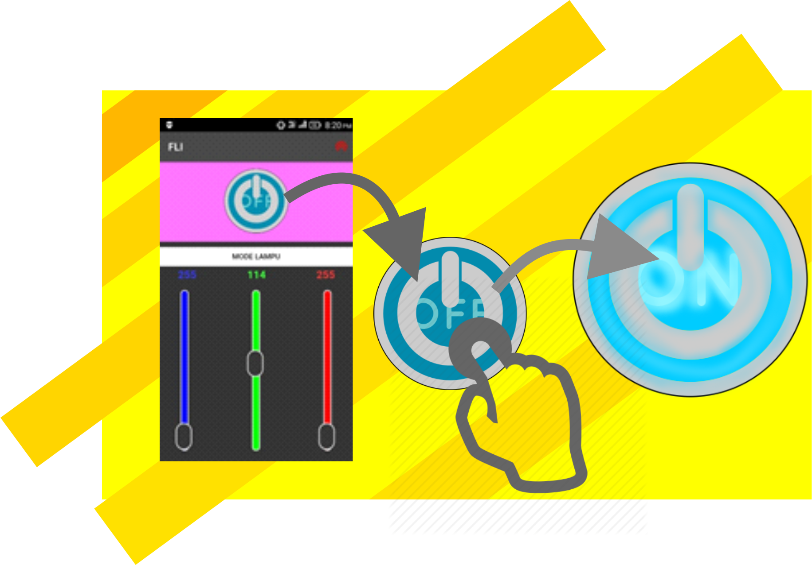
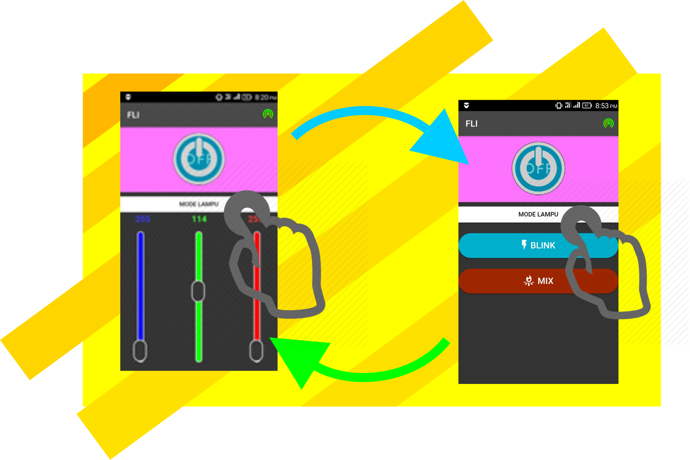

Panduan Penggunaan Lampu FLI
Install aplikasinya , dengan mengaktifkan perjinan unknown source sekali saja
untuk memberikan akses ke Aplikasi FLI

Hubungkan Aplikasi dengan lampu dengan menekan tombol Wi-Fi pada Aplikasi

Jika Koneksi Sukses maka akan muncul notifikasi sukses dan tombol akan berubah menjadi
warna hijau

Untuk menyala dan matikan lampu tekan tombol on / off pada aplikasi

Untuk mengganti mode tekan tombol Mode Lampu pada bagian tengah

Mode Slider digunakan untuk mengatur warna lampu
Mode Otomatis memiliki beberapa pilihan yaitu:
Slow : Berganti warna secara Lambat
Fast : Berganti warna secara Cepat
Mix : Berganti warna Cepat dan Lambat bergantian
Random : Berganti warna secara Random